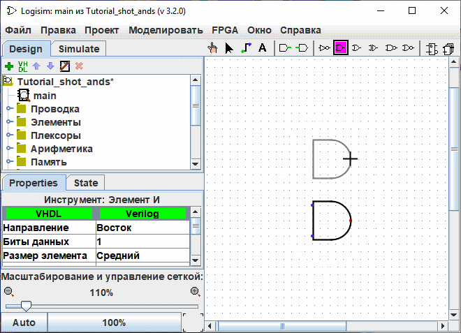
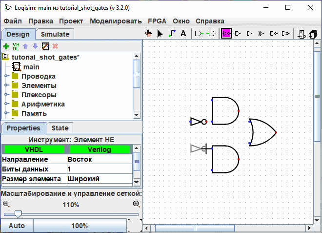
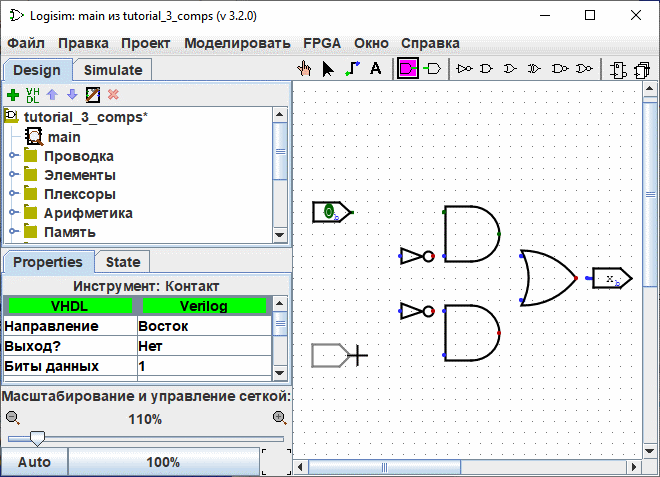

прецедент: Шаг 0: Осваиваемся
Шаг 1: Добавление логических элементов
Вспомним, что мы пытаемся построить следующую схему в Logisim.

Я предлагаю строить схему, добавляя сначала элементы, как своего рода каркас, а потом соединять их проводами. Первое, что мы сделаем, это добавим два И Ворота. Нажмите на инструмент "И" на панели инструментов ( , предпоследний инструмент в списке). Затем щёлкните в области редактирования там, где вы хотите поместить первый элемент И. Не забудьте оставить достаточно места для вещей слева. Затем нажмите на инструмент Элемент И снова и поместите второй элемент И под первым.
, предпоследний инструмент в списке). Затем щёлкните в области редактирования там, где вы хотите поместить первый элемент И. Не забудьте оставить достаточно места для вещей слева. Затем нажмите на инструмент Элемент И снова и поместите второй элемент И под первым.

Следите за двумя точками на левой стороне логических ворот И. Это места, где могут быть прикреплены провода. Просто так получилось, что мы используем только две из них для построения нашей логическая или эксклюзивная дверь. Но для других схем может оказаться полезным иметь более двух проводов, подключенных к логическим воротам. Количество соединений может быть изменено в свойствах "Количество входов" компонента.
Теперь добавьте другие элементы. Сначала щёлкните на инструменте Элемент ИЛИ ( ); затем щёлкните там, где вы хотите его поместить. И расположите два элемента НЕ на холсте, используя инструмент Элемент НЕ (
); затем щёлкните там, где вы хотите его поместить. И расположите два элемента НЕ на холсте, используя инструмент Элемент НЕ ( ).
).

Я оставил немного пространства между NOT и AND двери, но если вы хотите, вы можете разместить их друг против друга и избежать задачи, чтобы связать их с кабелем позже.
Теперь мы хотим добавить в чертёж два входа х и у. Выберите инструмент Добавить входной контакт ( ) и разместите контакты. Вам также нужно разместить выходной контакт рядом с выходом элемента ИЛИ, используя инструмент Добавить выходной контакт (
) и разместите контакты. Вам также нужно разместить выходной контакт рядом с выходом элемента ИЛИ, используя инструмент Добавить выходной контакт ( ). (Опять же, я оставляю немного пространства между элементом ИЛИ и выходным контактом, но вы можете разместить их сразу друг за другом.)
). (Опять же, я оставляю немного пространства между элементом ИЛИ и выходным контактом, но вы можете разместить их сразу друг за другом.)

Если вы решили, что вам не нравится, где вы разместили что-то, то вы можете выбрать это с помощью Инструмента Правка ( ) и перетащить в нужное место. Или же вы можете удалить его полностью, выбрав из меню | Правка |→| Удалить | Правка или нажав клавишу Delete или Ctrl-X.
) и перетащить в нужное место. Или же вы можете удалить его полностью, выбрав из меню | Правка |→| Удалить | Правка или нажав клавишу Delete или Ctrl-X.
Когда вы размещаете каждый компонент, вы заметите, что как только компонент размещён, Logisim возвращается к Инструменту Правка ( ), так что вы можете двигать размещённый компонент, или (как мы скоро увидим) соединить компонент с другими, создавая провода. Если вы хотите добавить копию недавно размещённого компонента, то быстрый вызов для этого - нажать Control-D для дублирования выделения. (Некоторые компьютеры используют другие клавиши для меню, такие как клавиша Command на Макинтошах. Вам нужно нажать эту клавишу с клавишей D.)
), так что вы можете двигать размещённый компонент, или (как мы скоро увидим) соединить компонент с другими, создавая провода. Если вы хотите добавить копию недавно размещённого компонента, то быстрый вызов для этого - нажать Control-D для дублирования выделения. (Некоторые компьютеры используют другие клавиши для меню, такие как клавиша Command на Макинтошах. Вам нужно нажать эту клавишу с клавишей D.)
Далее: Шаг 2: Добавление проводов